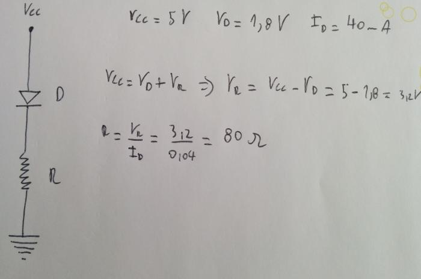
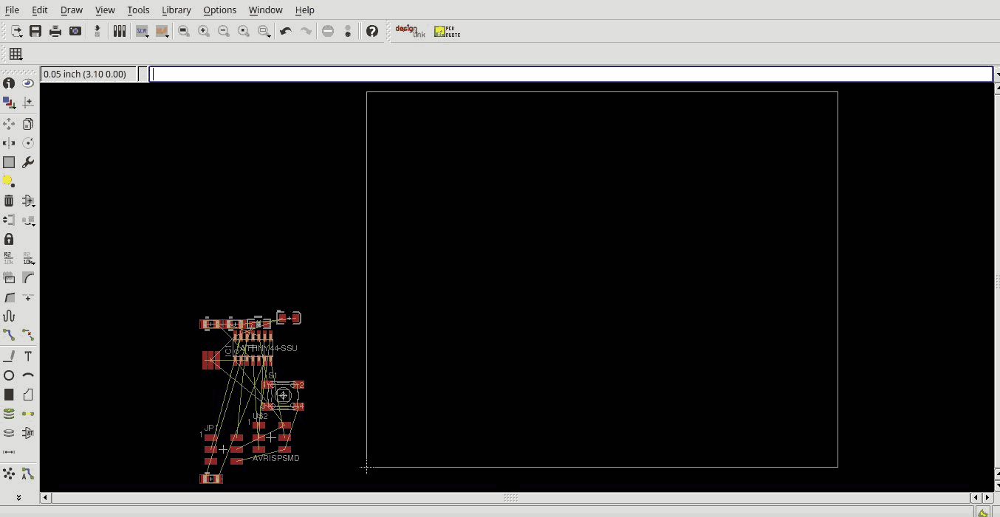
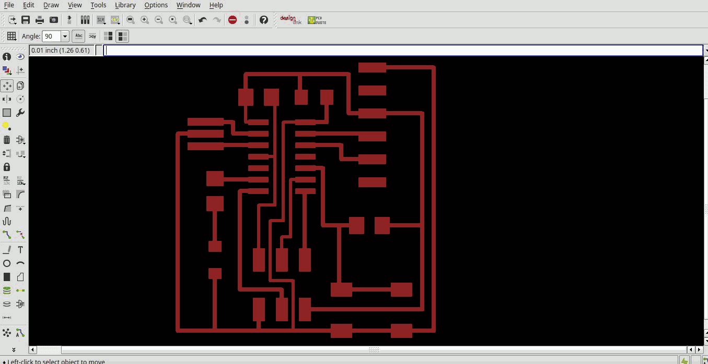
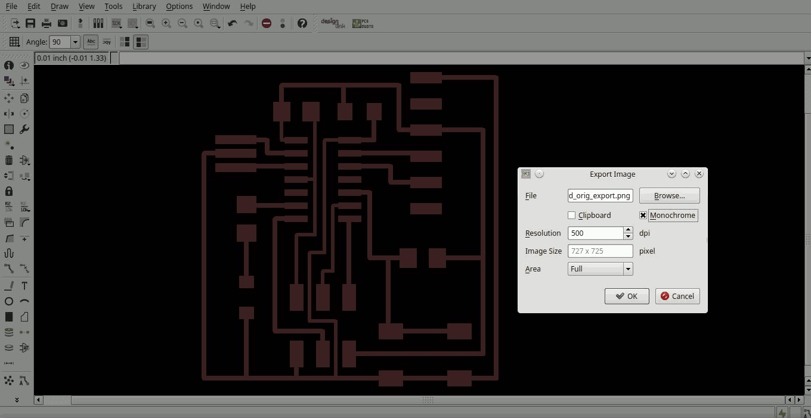
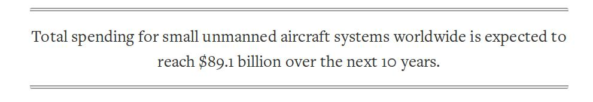

Hello, I'm Daniele Ingrassia
Welcome to my repository!
Here you can find my works @FabAcademy 2015.
I won’t hide behind the work that I am doing or the studies that I have done in the past. I’m a dreamer. In my personal way of thinking this means that I always try to reach very difficult and often untrusted objectives that put me in a constant challenge with myself and that quickly change my cognition of what I am capable of.

- So, here are some of the things I had fun to do with:
- disassembling a car in order to make a dune buggy
- building a motorcycle with pieces taken from junkyard
- inventing a new kind of hybrid recommendation and profiling system used in the official mobile app of WU2013
- inventing an automatic topic recognition system that is capable to analyze free text
- making an Android controlled car with a toy car, a netbook motherboard and Arduino


- Having said this, here are some details on "normal" things:
- I’m a qualified technician in electrotechnics
- I’m an Information Technology engineer
- I work since the end of 2012 as a junior researcher at IS3 Lab of Engineering Ingegneria Informatica
- I’m specialized in A.I., specifically in PRACTical reasONIng sySTems and recommender systems
Gmail and Google+: ingrassiada@gmail.com
Linkedin: Daniele Ingrassia
During this week I've learned about principles and practices, project management.
Digital fabrication is not new to me as I've already watched some videos about it and the Neil's speeches, but I'm really excited about the course that is starting. Digital fabrication, as a lot of other things that we then discover, is inspired by nature. But, what here is making the difference, is the fact that we are talking about one of the best feature that nature has built-in: self-reproduction. I was thinking about computer's CPU and memory as organizers of electrons via small quantified amounts of electricity, and due to this I was imagining a program as an ordered bunch of electrons groups. When I learned about digital fabrication this point of view became obsolete as we are now at the next step: a piece of code does not just describe a thing, it's a thing itself.
Do you like this site?
Even if I'm a IT engineer, I'm not familiar with web development because I often work with backend's services and components. So I like the fact I had the opportunity to study a bit of this kind of things. I prefer big fonts to help readability, and I don't like pages full of text or little details, I just want to put only the things that are strictly needed and nothing else. The same strategy I will use for additional web components. Also, if you don't want to read all the text, you can just follow the red words to understand the main keywords and topics of the page you are looking at. To edit HTML and CSS Massimo suggested us to use Brackets. I tried Brackets a bit, but I quickly discovered that I wasn't familiar with the text colors of the Brackets' themes. Also I missed the document text preview on the right side. So I ended up with Sublime, a lightweight HTML editor that we use sometimes at work.
Here is a comparison of the two editors:

To effectively test in locale my web pages I used the web server nginx.
Via APT I easily installed nginx:
sudo apt-get install nginx
Then I changed its document root with the path of my directory inside my local git FabAcademy repository. To do this I edited the nginx configuration file of the default site:
sudo nano /etc/nginx/sites-enabled/deafult
and replaced the line:
root /usr/share/nginx/html;
with:
root /home/satsha/git/FabAcademy2015-Opendot/ingrassia.daniele;
In the nginx configuration file this line is inside the server block, so this path is considered the starting point of all the locations (url paths) of this server block. In this case only the default location "/" was present. I also changed the port of the default server block from 8080 to 8081, because I may already have other services on the 8080:
listen 8081 default_server;
Then, file saved and back on bash, I started nginx with:
sudo service nginx start
And at
http://127.0.0.1:8081
browser successfully showed me my test index.html:

At this point I was ready to start with HTML and CSS development. First I headed to W3Schools to revise the structure of a web page and some of the HTML tags that Massimo teached us about:
<html> <!-- define an HTML document -->
<head> <!-- document's meta data -->
<title>Title of the document</title>
</head>
<body> <!-- document's content -->
<section> <!-- section -->
<div> <!-- division -->
<p>some text</p> <!-- paragraph -->
<a href="http://www.fabacademy.org"></a> <!--hyperlink-->
<img src="image.jpg"></img> <!--image-->
<ul>List title <!-- unordered list -->
<li>list item</li> <!--list item-->
</ul>
</div>
</section>
</body>
</html>
Then I analyzed how to reference a specific HTML tag:
<p id="id1" class="class1">some text</p> <!-- paragraph -->
The difference between id and class is that id identifies only one object, while a class identifies a group of objects. Here it is how to reference these identifiers inside CSS:
body{} /* apply style inside body tag */
.class1 {} /* apply style on all the object that belong t class1 */
#id1 {} /* apply style on all the object with id id1 */
What about git?
We often use git at work, so I'm not new of this kind of distributed version control. However I was happy (when I was able of!) to help my fellow students whenever they needed. To sync with our intermediate repository and push my modifications I followed these steps.
First I cloned the repository locally:
git clone https://github.com/opendot/FabAcademy2015-Opendot.git
Then I added my site inside my own folder, and added it and its files to virtual index:
git add -A .
With the modifications inside virtual index, I can now commit to my local repository:
git commit -m "first commit of daniele ingrassia's website"
Just before pushing I pulled, so I'm sure that if anybody in the meanwhile made any push I get his modifications:
git pull origin master
Finally I pushed my modifications on the remote repository:
git push origin master
This week I've learned about computer-aided design.
Apart from a few and simple experiments with Blender, I've never used CAD or rendering software. At the beginning of the week, Massimo told us that we would have talked only about a subset of the long list of the software presented in MIT lecture. So, I've first started with installing such software, and, since I'm on Linux, I could not install all of them directly, but I had to use my Windows virtual machine. Here is a table with the main features of the software Massimo introduced us:
| Name | Dim. | Used for | OS | License | Notes |
| Gimp | 2D | bitmap images | multi | LGPL/GPL | Photoshop free clone | Inkscape | 2D | vector graphics | multi | GPL | Vetcors' control points | QCad | 2D | CAD | multi | GPL | Very easy | DraftSight | 2D | CAD | mac/linux | freeware | Autocad clone | FreeCad | 2D/3D | CAD | multi | LGPL | It's a beta | Blender | 3D | 3D modeling | multi | GPL | Good for meshes | Rhino | 3D | 3D modeling/CAD | win/mac | proprietary | Good for NURBS |
Inkscape was one of the first software that I tried out. It was very easy to learn and in short time I was able to easily manage how to use the vectors' control points:

After some use of Inkscape I thought that it wasn't the right choice for designing something precise, like the drone I want to build or a part of it. If I need to 3D print parts, or to measure distance between points, the best is to use a 2D/3D CAD software. Accordingly to this I decided to try FreeCad. FreedCad was very good, and also relatively easy to me. The problem was that FreeCad is a beta, and I experienced some errors and chrashes in the middle of the work that made me consider this software not a reliable choice. I also briefly tried QCad, but after FreedCad it seemed to be too simple for the scope I had. The lastest software in the Massimo's list that is specialized in 2D CAD is DraftSight. Since it's a clone of the famous Autocad, and therefore inherits its commands, I felt comfortable with DraftSight both at the beginning and then when I tried to use more advanced commands. I decided to use DraftSight for 2D technical drawing.
Here is the design of the drone's frame and its dimensions, made with DraftSight(download):

Furthermore, because of the special assembly feature the drones have, I also tried to design the cubic frame(download):
When I saw these drawings clompleted, I could not wait to see them rendered in 3D! As a strategy I was thinking about exporting the 2D technical drawings I made to svg format, and then doing an import in Blender. At the first usages of Blender I was advantaged by the little experiences of the past. But then it was a nightmare: I get lost in countless commands that Blender has and also I encountered some bugs of the boolean modifier. So, as a last chance for 3D I tried Rhino three months trial in the Windows virtual machine. Despite a non easy start, and after some difficulties, I really appreciated Rhino. So taken further by the desire to render the 2D technical drawings I managed to correctly import the svg files, extruded the surfaces, and reached the goal to decently render them, with the compliance of the dimensions!
So, here you can see the surfaces just before extrusion:

Here is the final 3D rendering of the frame(download):

And here is the 3D rendering of the cubic frame(download):

Finally you can play with last one:
In this week we've talked about computer-controlled cutting.
- There are different cutting techniques, of which the main ones are:
- Vinyl cutting, cheap and simple cutting technology, can cut soft materials like paper and vinyl
- Laser cutting, one of the most spread technologies, can cut materials like wood, PMMA and engrave metals
- Water jet cutting, expensive technology that can cut hard materials like marbles and metals
Some principal facts that are needed to know about cutting techniques are relative on how they work. One of these regards the cut: because it has a non zero width, it will destroy thin strips of material around itself. So if we need to cut something in a very precise way, we have to estimate this value to obtain the exact dimensions we want. The width of a cut is called kerf. Another one is that, even if we get a two dimensional cut, we can combine several cuts to assembly 3D objects and shapes. This can be done, for example, with joints in order to make a box, or cutting several layers of different dimensions and stacking them up. An important thing to know about laser is that the shape of a laser cut is not perfectly straight but tends to be a cone. This effect is more evident by cutting thicker materials.
After Wednesday's lecture and Thursday's theory lesson we had the opportunity to see our laser cutter (a GCC Laser Pro) in action. As first experiment we made some simple cuts on a 3mm scrap piece of plywood. There were alot of details to memorize on how to use this (or in general a) laser cutter, so I decided to write here a brief step by step guide:
1. remove any material already present on the cutting grid
2. remove any leavings remained in the cutting grid, or below it
3. place new material on the cutting grid
4. check if the material is bent (for example wood) and attempt to lock it in order to minimize bending
5. turn on the laser cutter
6. calibrate Z axis (height of laser lens) if the previous cut was made with different material
7. manually place the lens in a desired point, if you want to use a custom starting point
8. close the protective lid
9. turn on the filtering system for the material you want to work with
10. go to PC and open the file you want to print
11. if necessary assign different layers to different parts of the drawing
12. put settings for each layer (mainly power, speed values and check vector, raster and air) if needed
13. put other settings like print area and home position
14. optionally do a test on a small square of material to check if settings are ok
15. hit print button
16. go to the machine's display and select the file to print
17. start cutting by pressing start button
18. turn off the laser cutter and filtering system at the end of the cut
After this first experiment, together with Simone Boasso and Mattia Ciurnelli, we tried to measure the kerf of our laser cutter. To do this we cutted another 3mm scrap piece of plywood as follows:

Then we obtained the kerf with the formula shown in the following picture:
Settings of the driver were: power 100% and speed 10%. The resulting kerf is 0.12mm. Kerf depends on speed and power of the laser beam and by thickness and type of material. In fact, these values are only a starting point useful to estimate future kerfs for the same or similar conditions.
Another interesting test made by me and Simone Boasso, was about trying to find the best combination of sizes in order to obtain wood joints, that will firmly block each other when fitted together. To do this test we made the following drawing(download):

Where the numbers identify the exact size of the holes or of the fillings, accordingly with the piece on which they are printed on. We decided to use the kerf measured before, as the single step to increase or decrease the sizes. The first attempt to cut this drawing onto a 6mm plywood has failed to cut all with settings of power 100% and speed 5%:

The second try was successful as we lowered speed to 3.4%. Here is the video of our successful cut:
You can also notice, as you already seen in the drawing, that with that cut we also tried to engrave some raster and vector numbers, for these we used the settings of power 100% and speed 80%. Furthermore, to improve precision, we made these engravings before the cuts, to be sure that wood was not moved before. The last part of the test was about to try every permutation of joints with the pieces we've made:
We also tried to test the wood joints with one of the pieces flipped. This because we want to test how much the cuts made by the laser tend to be a cone. Finally the best permutation for a wood joint was the filling of 10.12mm with the hole of 9.64mm.
For my personal experimentations with laser cutting I was thinking about to make an adjustable notebook stand. I wanted to make this because my notebook often warms up very quickly, forcing me to put something below it to help cooling. The main idea is to realize a rectangular top, perforated for the most to help notebook breathing and supported by two lateral pieces, specially shaped to hold the rectangular top and allow some inclination.
- Starting from this idea, I made the following considerations:
- rectangular top must be capable to support different sizes, so I measured different notebooks from 10" to 17"
- to avoid any future warping I preferred to use 8mm plywood
- lateral pieces must allow breathing to the air intakes on all sides, as well allow to use all sides' connections
- this notebook stand can be used also as reading desk, so I can use an higher inclination for the last regulation
- plywood offers good sliding friction to the notebook
- I don't take kerf in consideration because of with 8mm plywood and fillings of centimeters the joints will be solid
- one of the joints must be capable of rotation, so I need to cut a little cylinder around it to help rotation
- as a reinforcement I need to put another piece below the rectangular top, this piece must not bother spaces
- I want the possibility to pass the cables through the rectangular top
- the rectangular top is most stressed longitudinally, so I designed it more resistant on that (irregular circumference)
- to avoid falling of smaller notebook I can fill the central part of rectangular top with two X shaped wood strips
- to reinforce all I can cut some little wood indentations and put there some o-rings
- I want to change inclination of the rectangular top without disassembling all
- the space below the rectangular top can be used to place a power supply, an external hard disk etc.
Here is the original drawing of the notebook stand(download):

And here is the drawing just before print to optimize spaces and the quantity of wood used:

The settings for my cut were: power 100% and speed 1.4%. This is our laser cutter while cutting the notebook stand:
And finally here are the results, all the pieces that constitute the notebook stand:

The notebook stand is solid, easy to assemble/disassemble, it doesn't require complete disassemble to change inclination and can be safely used also without o-rings. The following pictures show the item assembled, used in different configurations with and without o-rings..


Finally, here is a video about inclination change without disassembling:
During this week we've talked about electronics production.
Unfortunately we hadn't the opportunity to accomplish with our weekly assignment because of the lacking of CNC mill. We'll try to complete the assignment as soon as the shipment of the CNC mill arrives.
By the way Massimo used meanwhile time to teach us Python. Even if I'm a IT engineer, I didn't know anything about this language except the Monty Python's name. As an experiment and to practice a bit of Python, I made a simple Python framework called Internet of Arduinos. From readme on my GitHub repo:
"Internet of Arduinos (IoA for friends :) is an Internet of Things Python framework where Things are Arduinos, or other MCU controlled devices. It's in a very early development stage, for now it supports basically HTTP(S) REST to Serial communication."
Maybe this framework will be useful to us in order to simplify the communication between internet connected devices and our MCUs. Here is a video with an example of use:
Other than this I made some experiment about assembling an Arduino UNO on a breadboard and flashing it with an Arduino as ISP. As you can already see in the video about InternetOfArduinos, the experiments were successful. So here are some pictures about this:


This week we've learned about 3D scanning and printing.
As first try about printing a non-subtractive made piece, I thought about three concentric spheres. This because the spheres inside the external one cannot be placed after it's printed. Therefore it will be very difficult, if not impossible, to make this with a 2D production technique, like laser cutting. I designed the spheres with Rhino (download):

To allow inside spheres to be printed without any support below, I placed them on a plane. I measured the diameter to be sure that they cannot exit, but also checked that if placed on the plane, they don't touch each other. After drawing was ready, I exported it as STL to be able to use Cura in order to obtain G-code. Our 3D printer is a Prusa Mendel i3. Here is a picture and a video about the first part of the printing process:

As you can see in the previous picture, there were some problems about the smallest sphere, located at the center. The irregularities shown are due to the fact that the below surface was not enough to firmly block the sphere with the brim. In fact the video shows central sphere moving while extrusor passes on it. I discovered that lateral pillars of the spheres were too weak, as some of them broke at the end of printing and when I tried to take spheres with hands. So my first try was unsuccessful, the following picture demonstrates effects of the above problems:


As second attempt, I tried to print again the same piece. But this time, in order to try to resolve problems related to the first try, I increased the scale of the spheres. This time the print seemed successful:

But, near the end of printing piece detached from the brim, so I was forced to stop the printer. As a result, the external sphere remained without roof:
Another side effect was about heat, that slowly modified the printed spheres until they become a little elliptic. In fact they results larger than spheres measured in the drawing. After these attempts, and suggestion from a colleague about the difficulties to make these kind of pieces with this printer, I decided to design something else. To experiment a bit more, I implemented an easy recursive algorithm that generates one of the simplest fractals: Koch Snowflake. The algorithm (download) was implemented as a Python Rhinoscript and it was used to draw fractals out of a set of lines. Here is a video that shows the algorithm in action:
Combining this algorithm with a cylinder what comes out is a strange piece that I called: fractal tube(download):

This time the print was successful, there are only some minor imperfections due to retraction. You can see the results in the following pictures:


For 3D scanning, we had the opportunity to use Xbox 360's Kinect. Kinect sensors and camera, mixed with the proper software, can act as a low cost but low resolution 3D scanner. Using Skanect as software for capturing and mixing Kinect's data, I had decent results. The picture on the left shows the raw model obtained from Skanet and imported in Blender. There were some minor imperfections (on the nose) and some flying objects (bottom left). I manually corrected these, as shown in the picture on the right. Here you can download the final model: scan.

Finally you can play with all the models that I designed this week:
During this week we've learned about electronics design.
Unfortunately we hadn't the opportunity to accomplish completely with our weekly assignment because of the lacking of some components. We'll try to complete the assignment as soon as the shipment of the components arrives.
The objective of this week is to redraw the hello-echo board adding to it a LED and a button. To do this we used a PCB design software called Eagle. With Eagle is possible to design PCBs from two different editor that represent respectively two point of view of the PCB: schematic and board. In schematic editor we are dealing with components types and connections between them. So here we specify the electrical part of the PCB, where important things are components' specifications and how they are connected. Before start working with board editor, is preferable to build the complete schematic of the PCB. This because in board editor we will work with physical specifications of the PCB, and every component added in the schematic editor will be added here as well. In board editor we take care of components' displacement and of traces that connects them.
To getting started with Eagle I created a new project and I added to it a new schematic:

Then, to be able to use some specific components, I added some FabAcademy Eagle libraries. Is in fact possible to create and add new components in Eagle. The components are packaged and distributed via libraries.

After adding libraries I was able to find and add to the schema components needed for the hello-echo board.
- The components needed are:
- 6-pin programming header to program the board
- Attiny44A the microcontroller
- FTDI header for power supply and computer connection
- 20 MHz Resonator external crystal clock generator, Attiny44A can work also @20Mhz
- Capacitor for a better quality input current
- 10K Resistors
- Led for the excerise
- Resistor to reduce led applied voltage


So, here are all the components in the schematic, just before connections was drawn:

To limit the voltage applied to the led, I had to calculate resistor value. In order to dimension it, I read current and voltage values form its datasheet:


Here you can see about my exercise on calculating it:

Finally here is the complete schematic, with all components connected and the value of the led's resistor assigned to 100 Ohm to avoid be right on the limit valoue of 80 Ohm:

Going to the board editor, it first showed a confused group of components, connected by yellow wires. These wires let us know what connections there are between components, but they aren't the ones that we need to print the PCB. All of these lines have to be transformed in traces, in order to represent the real PCB to be printed. In this case we have to made a single layer PCB, so all the traces must be on the same surface.

The first thing to do was to put all the components inside the printed area of the limited versio of Eagle:

As first attempt to order traces, I tried the autoroute function. This function try to automatically find te best path for each trace:

As you can see in the followig picture, the autoroute function is not perfect, in fact some of the traces were not made:

After some attemps with changing components' displacement, the autoroute made a nice shot, with 100% of the traces ok. Still, the result was not so good, as many traces was too near each other or oblique:

So, with the tutorial board in mind, I tried to replicate it via manual traces editing. Even if I made some minor changes at the components' displacement, the result was much pretty the same:

To be ready to print the circuit, I selected only the first layer and then exported it with *.png image format, with settings of monochrome and 500DPI of resolution:


After that I imported the png file in Gimp in order to crop the unnecessary part of the image, and to add some boarders and text. Here are the final results of board and interior:


Because I was not satisfied on copy the tutorial's board, I tried to make another one. To this this I redesigned manually all the trace's paths. The following pictures shows the final result of my hello-board personal version.


Here you can download the two Eagle projects I made this week: hello-board, personal-hello-board
week7 embedded programming
week8 computer-controlled machining
week9 molding and casting
week10 input devices
week11 output devices
week12 composites
week13 networking and communications
week14 mechanical design, machine design
week15 interface and application programming
week16 applications and implications
week17 invention, intellectual property, and income
week18 project development
week19 project presentation
Final Project: concept
We are by now invaded by Unmanned Aerial Vehicles. They spread everywhere and for whatever kind of use, from taking an aerial video of a party to flying over a raging forest fire alerting firefighters, from hovering over a construction site conducting a building inspection to exploring dangerous places like war sites.


The use of such flying robotics in the form of small UAVs, also known as drones, is pervasive now but not only: its commercial growth is predicted to significantly increase and reach several tens billions of dollars worldwide over the next years.
However, in order to achieve this market increase, a multitude of issues needs to be addressed and several improvements need to be done. For example, talking about security, the drones on the market today don’t have anything that complain with obstacle avoidance, so they easily get crashed on people and things by inexperienced pilots. Furthermore, they don’t present any kind of mechanism to cooperate each other, or to obtain smarter behaviours.

- Accordingly to above examples, and due to my interest on A.I., what I want to do is to make a drone with such capabilities. So my goal is to acquire all the know-how on the today’s drones to build a smart quadcopter that offers the following extras:
- obstacle avoidance
- cooperation capabilities
The concept of cooperation I want to realize is intended as another use of the drones: the drones as building block material that can be modularly and autonomously assembled. In this direction I think at this quadcopter like a normal one, but equipped with advanced hardware and software components, and surrounded by a cage, in order to apply more sensors and to enable an autonomous assembly behaviour. I think about the cage as a light cubic frame for simplicity of drones assembling.
The acronym I have chosen for this drone is AAVOID: Autonomous Assembly aVOIding Drone
Here is a draft schema of the Control Unit's hardware architecture:

project2: process
project3: system
project4: v0.1
This work is licensed under the terms of the GNU Lesser General Public License v2.1 (LGPL)